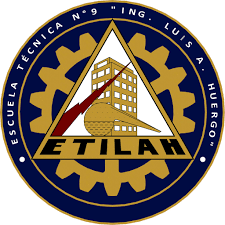
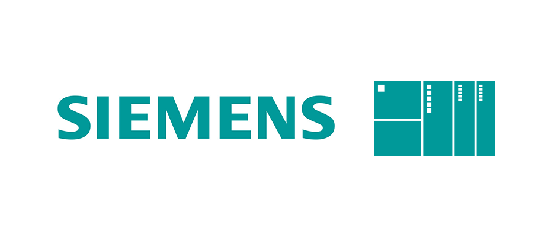
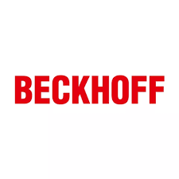
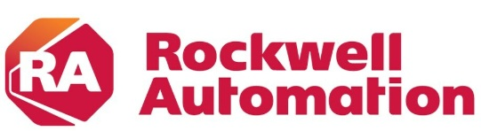
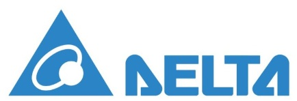
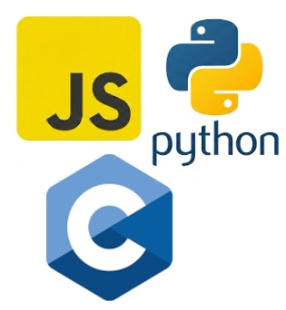
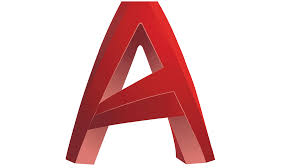

Experiencia en el diseño y ejecución de sistemas de automatización industrial. Especialista en arquitecturas de control escalables, integro soluciones que van desde la agilidad de Delta hasta la robustez industrial de Siemens y la alta capacidad de procesamiento de Beckhoff, optimizando procesos críticos para la industria moderna.
- Email:
diegojulian.h@gmail.com - Ubicación:
Buenos Aires, Argentina
Ingeniero en Informática
Universidad Nacional de La Matanza | Ingeniería de Software

Técnico Eléctrico
Escuela Técnica Ing. Luis A. Huergo | Electrónica Industrial

Siemens S7 / TIA Portal
Step 7, WinCC, S7-1200

Beckhoff TwinCAT
TwinCAT 2/3, EtherCAT

RSLogix 5000 / Studio 5000 Logix Designer
FactoryTalk View Studio

IspSoft / WplSoft
DopSoft

Lenguaje C, JavaSctipt, Python

Diseño en Autocad
Diseño y puesta en marcha de planta para extracción de proteínas (95%). Arquitectura Beckhoff IPC e Infilink SCADA.
Hardware y Software
- IPC Beckhoff: Master con dos remotas.
- SCADA Infilink: Comando y monitoreo.
- Kepserver: Datos en tiempo real.
Lógica de Proceso
- Elaboración: Secuencias productivas.
- Ciclos CIP: Lavado automatizado.
- Control PID: Temperaturas.
Desarrollo integral de gestión de combustible con monitoreo remoto.
Control y Seguridad
- Marcha/Parada: Por demanda de caudal.
- Seguridad: Log de eventos.
- Switchover: Por horas de uso.
Hardware e Interfaz
- HMI: Control de set-points.
- Web Server: Monitoreo remoto.
- Ethernet/IP: Comunicación industrial.
Actualización tecnológica integral de una interfaz de supervisión obsoleta basada en Visual Basic 6 hacia una plataforma moderna. Se rediseñó la arquitectura de software para aprovechar las capacidades nativas de gestión de datos y seguridad de la versión 8.0 de WinCC.
Ingeniería de Migración
- Legacy: Portabilidad de lógica desde VisiWin (VB6).
- Control: Conectividad optimizada con PLC Siemens.
- Navegación: Rediseño de la jerarquía y flujo de pantallas.
Funcionalidades Implementadas
- Alarmas: Explotación de las capacidades de Gestión de Alarmas y Eventos de WinCC 8.0 para el diagnóstico avanzado del estado de la planta.
- Usuarios: Control de acceso por niveles de seguridad.